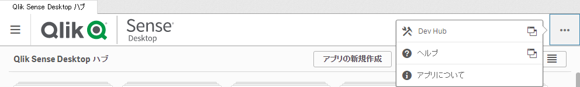
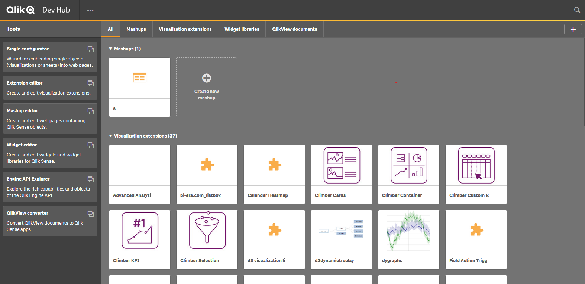
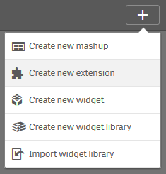
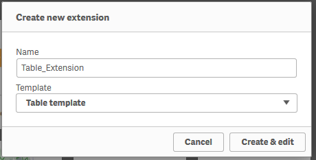
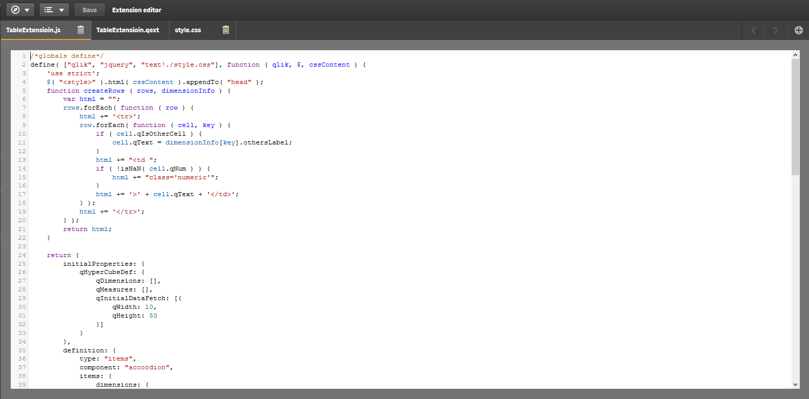

このページで作成するファイルをダウンロード
テンプレートからエクステンション作成
Qlik Sense Hubを開き、右上の「…」ボタンから「Dev Hub」をクリックします。
既定のWebブラウザが起動し、 Dev Hub が開かれます。


新規エクステンションを作成します。
右上の「＋」ボタンから「Create new Extension」をクリックします。

エクステンションの名前を入力します。
テンプレートは「Table template」を選択します。

一般的なテーブルを集計する機能を持ったエクステンションのテンプレートが作成されます。  このままDev Hub上でエクステンションを編集することもできますが、今後の作業はVisual Studio Code等のエディタで行うことを強くお勧めします。
作成されたエクステンションはC:\Users\{USERNAME}\Documents\Qlik\Sense\Extensionsに保存されています。